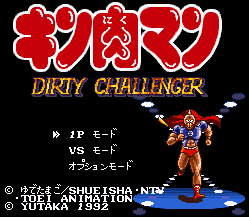

Kinikuman - SNES Games

- Company: Yutaka
- Date Released: 1992
- Genre: Wrestling simulator
Controls
- A button: Punch
- B button: ???
- X button: Dash off Ropes
- Y button: ???
- L button: ???
- R button: ???
- Start: Pause
- Select: [not used?]
Anime Video Game Resource Center © 1998 by Luis A. Cruz